| 今日の主なイベント |
| ソウルへ移動 |
| DTソウル公演 |
| 成田空港 |
結局いつものように徹夜で準備（苦笑）
ホテルの予約がどのサイトでもリアルタイムで出来ないのには参った。
一応予約を入れたが、回答に1日かかってしまうとのこと。
05:30
家を出発。この時間だとまだ肌寒い。
今回は始発のバスで駅へ。
こんな時間に乗る人もいないだろうと思ったら、ほぼ満席。
このオバちゃんたちはどこへ行くのだろうか。
05:47
JR乗車。キヨスクがまだ開いてなくてちょっと誤算。
成田エクスプレスの始発に乗り換え。
ほぼ満席。寝る。
07:31
成田空港第一ターミナル到着。
結構混んでいる。
いつもと違って、Gカウンターで引換券を受け取り。
JCBサービスデスクはまだ開いていない。
| 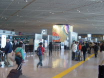 |  |
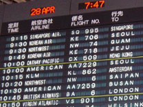 |
| 成田空港 | Gカウンター | KE706便 |
大韓航空のAカウンターに並ぶ。
エコノミーはかなり列が出来ていて、少し待たされた。
席は窓側を希望。
荷物は12.2kgだった。
とりあえず5万円を韓国ウォン(W)に両替しておく。
韓国は高額紙幣がないので、1万円→1万W×10枚と札束の山になる。
金持ち気分にはなるけど、財布が膨れてしまって不便だ。
| 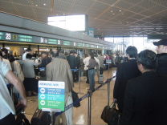 | 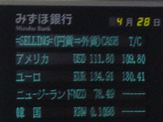 | 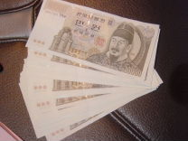 |
| 大韓航空 | 両替 | ウォン |
まだ時間があるのでローソンで手帳を購入。
いつの間にかフライト時間が10分早まっていた。
JCBカウンターでグッズをもらっておく。
メールをチェックするも、まだホテルの回答はきていない。
| 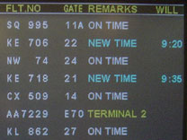 | 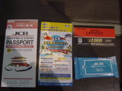 | 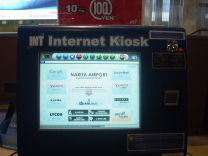 |
| KE706便 | JCBグッズ | Internet Kiosk |
X線検査はいつも通り。
GW中は靴を脱いで検査すると言う報道があったけど、まだ実施してなかった。
09:13
搭乗。座席は3-4-3配列の窓側。機体はB747-400。
座席は割りとゆったりめかな。
ほぼ満席だな～と思っていたら、隣にデブが乗ってきた。
完全にはみでてるっつうの。
出入国カードが配られたので、早速記入。
 |
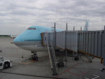 | 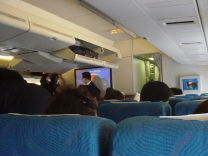 |
| No22ゲート | KE706便 | 機内 |
| フライト |
09:45
離陸。機内アナウンスが聞こえずらい。
とりあえず寝る。
10:15
機内食が配られる。朝から焼肉ご飯かよ。さすが韓国。
| 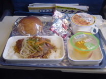 | 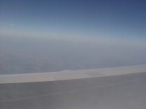 |
| 機内食 | 上空 |
TVでは韓国のニュース番組を放映中。
北朝鮮列車テロ事件や韓国サッカー代表の練習風景など。
ただ、イヤホンが配られていないのだが・・よく分からんシステムだ。
11:20
朝鮮半島が見えてきた。
岩肌が目立つ空港へと旋回。
11:39
着陸。だだっ広い空港だ。
| 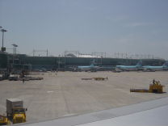 | 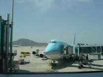 |
| 仁川空港 | KE706便 |
| 仁川空港 （インチョン空港） |
国際線に乗り換える人が多いみたいで、列が出来ている。
空港内の標記はハングルか英語が主だが、日本語表示もある。
入国審査に並ぶ。
特に何も聞かれなかった。
荷物を受け取り、出口へ。
| 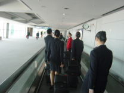 | 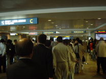 | 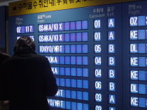 |
| 空港内 | 入国審査 | 荷物案内 |
| 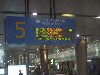 | 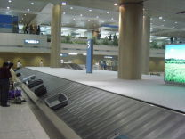 | 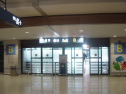 |
| 荷物受け取り | 荷物受け取り | 出口へ |
ネット端末があったので、使ってみる。
小銭しか使えないので、まずは両替。
アクセスは問題なし。日本語も表示できた。
予約サイトからメールが来ていたが、満室でNGとのことでガックリ。
| 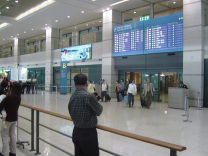 | 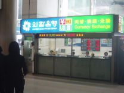 |
| 出口ロビー | 銀行 |
| 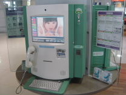 | 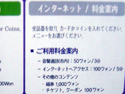 | 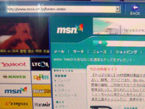 |
| ネット端末 | 料金案内 | 端末画面 |
Informationで資料をもらう。
| 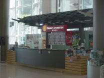 |
| Information |
| 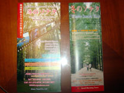 |  |
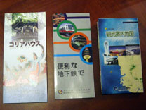 |
| 冬のソナタツアー | マップ | その他資料 |
ホテル案内所で今日の宿を探す。
日本語は通じなかったので、英語で交渉。
予約サイトで断られた同じホテルを予約できた。
バスでの行きかたも教えてもらう。
とりあえず一安心。
| 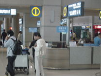 | 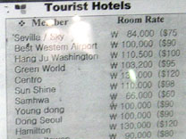 |
| ホテル案内所 | ホテル料金表 |
| バスで移動 |
バス乗り場に向かう。
タクシー運ちゃんの客引きがしつこい。
日本より少しだけ涼しいかな。
| 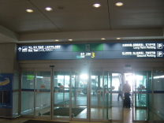 | 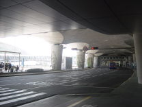 | 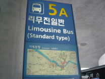 |
| 空港出口 | 空港前 | 5A乗り場 |
| 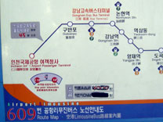 | 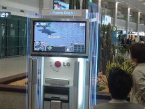 |
| バスルート | ネットゲーム中継 |
13:20
609便に乗り込む。
7000Wを料金箱に入れる。
荷物置き場にスーツケースを置く。
人が少ないと思ったら、11B乗り場から結構乗ってきた。
海岸沿いを通って高速へ。
 |
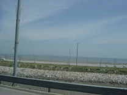 | 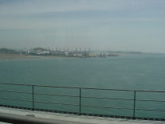 |
| バス車内 | 海岸 | 橋の上 |
| 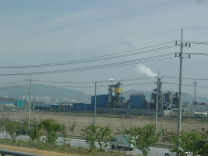 | 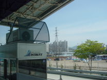 | 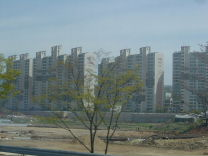 |
| 工場 | 高速料金所 | 高層ビル |
ポカポカ陽気で寝てしまった。
市内は交通量が多い。
| 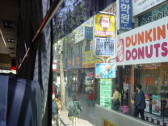 | 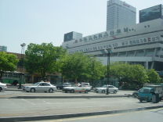 | 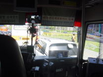 |
| 最初の停留所 | 高速バスターミナル | 渋滞中 |
| ホテルへ |
14:49
ノンヒョン駅のバス停で降りる。
ずいぶん時間がかかったなあ。腹減った。
ホテルまで歩く。
コンビニなど日本で見慣れた店も多い。
歩行者用の青信号がすぐに点滅しだすのが変な感じ。
路上には屋台がちらほら並んでいる。
| 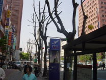 | 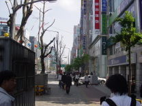 | 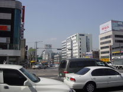 |
| バス停 | 江南大路 | 交差点 |
| 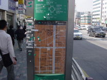 | 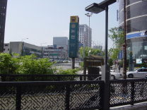 | 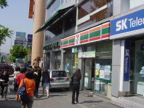 |
| 地図 | 地下鉄新沙駅入口 | 7-11 |
| 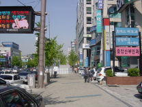 | ||
| ホテルへ | 映画館 | ホテル |
| YOUNG DONG HOTEL |
15:20
ホテル到着。
思ったより遠くて疲れてしまった。タクシーにしとけばよかったかな。
奮発しただけあってまあまあの部屋。
ただ、LAN使用は別料金で、$10/日というのは誤算だった。
部屋番号がIDとなっており、アクセス速度はまあまあ。
 |
||
| 部屋 | ベッド | バスルーム |
| TV | 高校生の試合中継 | NHKも映る |
| LAN回線 | 接続方法 | 水1本は無料 |
明日は明洞エリアに移動するので、明日のホテルを予約しておく。
Astoriaホテルに電話すると、日本語で対応してくれた。
あっさり2泊OK.。
| 狎鴎亭洞～三成 |
ライブ会場方面へぶらぶら歩く。
 |
||
| 島山大路 | CINE CITY | ゴリラ？ |
| ハードロックカフェ | 三成路 | インターコンチネンタル |
| 現代百貨店 | COEX Mall前 | 日韓WCの名残 |
| COEX Mall |
時間がなくなってきたので、ファーストフードで腹ごなし。
レジで英語が通じずに手間取る。4700W
結構辛かった。
| COEX Mall | てんぷら | Mall内 |
| ケンタ風 | セット | セット |
| オリンピック公園へ |
地下鉄でオリンピック公園に向かう。
窓口で5000Wの定額券を購入。
2号線に乗車。地下鉄のシステムや車両は日本とほぼ同じ。
219三成（サムソン）駅から216蚕室（チャムシル）駅へ。
駅に番号が付いているのは分かりやすい。
車内アナウンスは韓国語と英語。
8号線に乗り換えて、813モンチョントソン駅へ。
 |
||
| 三成駅 | 窓口 | 定額券切符 |
 |
 |
|
| 地下鉄マップ | 改札 | 2号線 |
| 8号線に乗り換え |
| ライブ会場 Olympic Hallへ |
19:20
モンチョントソン駅到着。
地上に出ると世界平和の門がドーンと見えた。
スケボーやローラースケートをしている人が多い。
メタラーらしき人はいないが、人の流れについていく。
あれが会場か？
なんだか女性や子供が随分多いなあ。
ペンライトなんかも売っていて、韓国は雰囲気違うな～
 |
||
| 世界平和の門 | 公園内 | 公園内 |
| 公園内 | 会場か？ | ペンライト売っている |
・・・って会場違うじゃないか！そもそも円形の会場じゃないし。
慌てて周囲の幾つかの建物を見回すが、どれも違う。
係員に場所を聞くと、東の方角にあるらしい。
開演時間が迫っているので、ダッシュ！
わざわざ海外まで来て観れなかったらシャレにならない。
ToTやメタリカのTシャツを着て走っている韓国人も何人かいた。
「Olympic Hall？」と走りながら聞かれたが、こっちが聞きたいよ。
でもなんとか会場を発見することができた。
| DreamTheaterライブ 第一部 |
19:50
会場到着。テントが設置されていて、チケットを売っている。
スタンディングのチケットを購入。77000W
その場でチケットをプリントアウトする方式だった。
| チケット |
入場する。カメラチェックは何故か無かった。
オフィシャルBBSで検査をしつこくアナウンスしていたのに、拍子抜け。
慌ていたので、グッズ販売は確認できず。
（黒ツアーTシャツ販売とポスター配布があったらしい）
場内に入ると客少なっ！
アリーナは半分もいないし、変形の2階席は完全に空席だ。
おいおい大丈夫か？
客層は全体に若い。
女性同士で来ている人も多い。
ToTやメタリカのTシャツを着ている人もいるが、大半は普通の私服だ。
場内にはいつものコンテスト曲がかかっている。
20:00
定刻にいつも通りの流れでスタート。
ペトルーシ側の10列目くらいで観ることにした。
band history videoが始まった。
歓声が湧き上がる。日本よりも熱狂的だ。
欧州のようにビデオに合わせて歌ったりはしないようだ。
ここでちょっと異変に気づいた。
いつものように3面LEDスクリーンを使っているのだが、今日は明らかに画質が粗い。
繋ぎ目？が見えてしまってるし、機材が違うのだろうか。
韓国は１公演だけなので、多分基本セットリストだろう。
まずはAs I Amが始まった。
一気にヒートアップして、ドドッと前に押し始めた。
「オイ！オイ！」縦ノリで凄い盛り上がり。
メンバーの衣装は全体に黒系。マイキーはホッケーシャツだ。
ラブリエも機嫌よさそうな表情をしている。
それにしてもデジカメで撮っている人が異常に多い。まるで撮影会みたい（苦笑）
一応係員が注意はしているみたいだが、効き目無し。
This Dying Soulへ。
相変わらず縦ノリ。
大阪IMPホールほどではないが、ステージが低目なのでメンバーの足元は見えない。
残念ながらラブリエの調子は日本公演より落ちていて、艶に欠ける感じ。
武道館にピークを持っていったというところか。
今日のペトルーシは機嫌がいいのか、顔の表情が豊かだ。
ソロパートではおどけた感じで顔を歪めたりしている。
「Good evening, Seoul！」ラブリエのMCに歓声が上がる。
「Are you ready？」「Yeahhh！」というコールに続いて、The Mirrorへ。
やはり基本セットっぽい。
Beyond This Lifeへ。出だしのピッチがズレていたような気がした。
ラブリエと一緒に歌いまくる観客。
ラブリエは何かを上げるようにスタッフに指示していた。
手を左右にスイングするところも綺麗に揃った。
日本だとちょっと気恥ずかしくて、なかなかこうはいかない。
人間ポンプのごとく水を吐き出すマイキー。またスティックキャッチをミス。
全体的にはリラックスムードに見える。
いつものようにimprov sectionへと移行していくのだが、ムムッあれは誰だ！
いつもはフランクザッパが映る映像が差し変わっている。
これは韓国人なのかな？なにか踊っているような感じだけど（国民体操らしい）
 |
|
| 誰？ | MP&JP |
ペトルーシのソロはいつも以上に弾きまくり。
最後は弾きながら正座するような体勢になっていた。
続いてジョーダンのソロパートへ。
妙に間が空くなあと思ったら、初めて聞くフレーズを弾き出した。
なんか韓国の歌みたいだぞ。（韓国民謡のアリランらしい）
周りの客は大合唱をしている。
こういう仕掛けでくるとは思わなかったな。
スコーピオンズの荒城の月みたい（古っ！）
| アリラン演奏中 | 全景 |
続いてHollow Yearsへ。
ライターがちらほら灯される。
普段はじっくり聴く歌だが、今日は周りと一緒に歌いまくり。気持ちよかったなあ。
エンディングで「John Petrucci！」と紹介したラブリエだが、マイク入ってなかったぞ(笑)
| マラカス中 |
War Inside My Head～The Test That Stumped Them Allへ。
また激しい縦ノリで盛り上がる。
マイキーがこぼしたスティックを客に手渡すラブリエ。
そういえばマイアングは相変わらず映らないなあ。
今日のペトルーシは全体に雑な感じ。
| War Inside My Head |
Endless Sacrificeへ。
「Hands Up！」一斉に手拍子が始まる。
今日もキーボード右側面に魚の絵が貼ってある。よっぽど気に入ったようだ。
それにしても韓国はパワフルだ。
変拍子バリバリのパートでも無理矢理縦ノリ。
ここまでで一番盛り上がった。
 |
| Endless Sacrifice |
一部ラストは定番のFinally Freeだ。
ラブリエはまた何回も上げるようにスタッフに指示していた。
サビでは凄まじい合唱となった。
 |
| Finally Free |
| DreamTheaterライブ 第二部 |
21:35
第一部終了。15分休憩に。
| 休憩中 |
グッズでもチェックしに行こうかとすると、会場後方に人だかりか出来ている。
何かと思ったらミネラルウォーターを配っていた。
あれだけ跳ねて歌ったら喉も渇くというもので、嬉しいサービスだ。
ロビーに出ると会場の外に出て一服している人が多い。
ポスターの前で記念撮影している人もいる。
グッズはもう売っていないようだ。
場内に戻り、今度はマイアング側に移動。
そういえば他に日本人は来ているのかな～。
さすがにパッと見ただけではよく分からない。
あちこちでステージをバックに記念撮影をしていて、無法地帯となっている。
前の白人も隣の韓国女性に「写真を撮ってメールで送ってくれ」と頼んでいる。
アドレスをメモするときに書くものがなさそうだったので、ペンを貸してあげた。
21:53
暗転してジョーダンだけ登場。
この始まり方といえば、Trial of Tearsだ。
今回のツアーで評価を上げた曲だけど、他にもっと聴きたい曲はあるのだが。
 |
||
| お魚ジョーダン | ジョーダン | マイアング |
マイキーは白のシャツに着替えていた。
ラブリエが振っているマラカスは前からあんなに大きかったっけ？
| ラブリエ | マラカス＆水筒 |
ローディがステージに突然飛び出してきて、腹這いになっている。
何事かと思ったが、ステージ上のカメラセッティングを調整しているようだ。
| 腹這いローディー |
珍しくラブリエがタオルで汗を拭いている。
続いてCaught in a Webだ。
1stの曲も人気が高く、縦ノリで跳ねまくる。
これは大阪初日のように客とのドラム合戦が見られるぞ！と思ったのだが、中間パートは飛ばされてしまった。
それにしても乗りやすい曲だけに、凄い盛り上がりとなった。
 |
| ドラムソロは無し |
そしてAnother Dayへ。
韓国でもI&Wの人気は高く、イントロが流れるとあちこちから悲鳴・絶叫がこだまする。
またドドッと前に押し寄せ始めた。
武道館でもやって欲しかったなあ。
手を左右にスイングする観客。
 |
| Another Day |
A Fortune in Liesへと続く。
すっかり定番曲になったようだ。
 |
| A Fortune in Lies |
Vacantが始まった。
今日の流れからすると、ToT3連発かな？
| 独唱 |
当然Stream of Consciousnessへと続く。
インストだろうとお構い無しに盛り上がる観客。
ここでも縦ノリとはもう付いていけません(^_^;)
 |
| Stream of Consciousness |
予想通りIn the Name of GodでToT3連発だ。
やはりこの流れは美しい。
ラブリエも徐々に調子を上げてきて、第一部よりもかなり良くなっている。
「オーオーオー」ではもちろん大合唱だ。
 |
| In the Name of God |
22:55
本編終了。
「Encore！Encore！」とちょっと日本風（アクセントが違うけど）な掛け声が響く。
アンコールは今日のセットリストだとMP１かな？
ツアー最終日だけにスペシャルな事を持ってくる可能性もあるが。
予想通りMetropolis part 1のイントロが流れてきた。
すさまじい絶叫が鳴り響く。衰えることがない韓国人のパワーには脱帽だ。
ラブリエが短い韓国語の挨拶を話していた。
 |
| MP1 |
途中のブレイクはかなり長く引っ張っていた。
大阪みたいにまた寝っころがるのか？と思ったが、何もなかった。
ラストも長く引っ張って、アレンジで締め。
ツアー最終日と言うことで、クルーに労いの挨拶をするマイキー。
一同礼で終了。
韓国だけにマイアングが話すのを期待したのだが、結局いつも通り何も無し(^_^;)
| クルーに感謝 | 礼 |
ちょっとだけステージのほうへ。特に何もゲットできず。
| ステージ前 | ペトルーシ側 | 後方 |
ロビーに出るとずらっと貼ってあったポスターが綺麗に無くなっている。
剥がされたのかな？
| 会場前 |
セットリスト的には大阪初日と同じで目新しさは無かったが、Beyond This Lifeの韓国アレンジを見れたし、なんといっても韓国の熱い反応を体験できただけで今日は満足。
これでしばらくDTを見れないかと思うと、ちょっと寂しいけど。
| 4/28/2004 Seoul, Korea Venue: Olympic Hall Set List: band history video (intro tape) 1. As I Am 2. This Dying Soul 3. The Mirror/The Mirror (reprise) 4. Beyond This Life (w/ extended improv section) 5. Hollow Years (w/ extended guitar solo) 6. War Inside My Head 7. The Test That Stumped Them All 8. Endless Sacrifice 9. Finally Free ~~~intermission~~~ 10. Trial of Tears 11. Caught in a Web 12. Another Day 13. A Fortune in Lies 14. Vacant 15. Stream of Consciousness 16. In the Name of God ~~~encore~~~ 17. Metropolis part 1 |
| ホテルへ |
23:15
会場を後にして、地下鉄に向かう。
| オブジェ | 世界平和の門 | 地下鉄入口 |
乗り換えがある駅ではウグイスの鳴き声がかかるようだ。
韓国人のファッションは全体的にイマイチだと思うが、メガネ（サングラス）だけはかなりオシャレ。
メガネっ子としては気になるところである。
ホームでジュースを飲む。紙コップ自販機で400W
2回乗り換えてカンナムグチョン駅で降りる。
メンバーが来るとも思えないけど、ハードロックカフェに行って食事することに。
| 自販機 | 終電間近 |
24:30
ハードロックカフェに到着。
26時まで営業しているはずだが、何故か閉まっていた。
| 島山大路 | ハードロックカフェ | ハードロックカフェ |
諦めてホテルまで歩いて帰る。
途中のコンビニで買出し。
| ビニール張りの店 | Sonyサービスセンター | 炉端焼き屋 |
| コンビニ | 買出し |
ホテル到着。
韓国代表×パラグアイの親善試合を再放送していた。引き分けだったようだ。
| 韓国×パラグアイ |
日本代表×チェコの結果も気になるが、そのまま寝てしまう。Zzzz